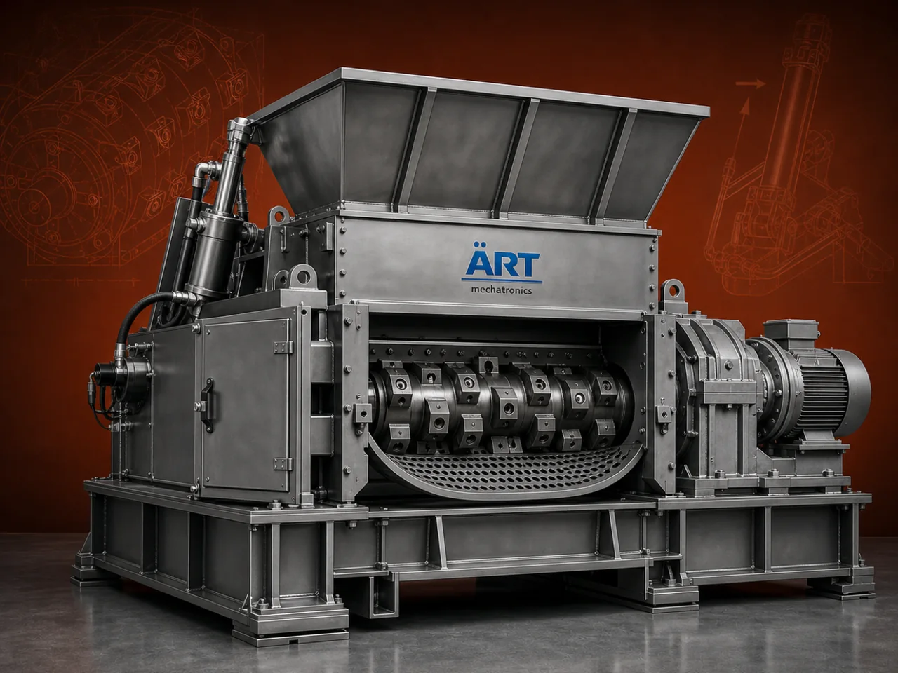

Shredder Machine (Industrial Waste Shredder & Material Size Reduction System)
A Shredder Machine, also known as an Industrial Shredder or Waste Shredder, is a powerful size reduction equipment designed to cut, tear, and shred materials into smaller pieces for recycling, disposal, or further processing.

About the Shredder Machine
Shredders are widely used in industries such as plastic recycling, metal processing, paper recycling, wood processing, e-waste management, packaging, and waste handling plants, where reducing material size is essential for efficient processing and resource recovery.
Industrial shredders help in volume reduction, easier handling, improved recycling efficiency, and environmental sustainability.
ART Mechatronics offers heavy-duty shredder machines, engineered for high torque, durability, and continuous industrial operation.
One machine, many names
Buyers search for this equipment under many terms — we manufacture all of them:
Working Principle of Shredder Machine
Material is fed into the shredder through:
Inside the machine:
Shredded material is discharged through:
Types of Shredder Machines
Industries Using Shredder Machines
♻️ Recycling Industry
- Plastic recycling
- E-waste processing
🏭 Manufacturing Industry
- Waste material reduction
📦 Packaging Industry
- Packaging waste shredding
🪵 Wood & Biomass Industry
- Wood chips
- Agro waste
🧾 Paper Industry
- Paper recycling
⚙️ Metal Industry
- Scrap metal processing
Features & Advantages
- High torque and powerful shredding
- Suitable for wide range of materials
- Efficient size reduction
- Durable and heavy-duty construction
- Low maintenance operation
- Energy-efficient performance
- Improves recycling efficiency
Technical Highlights
- Capacity: Custom (kg/hr to tons/hr)
- Shredding Type: Shear / Cutting
- Shaft Design: Single / Double / Multi-shaft
- Blade Material: Hardened steel
- Construction: Heavy-duty steel
- Drive: Electric motor / hydraulic
Turnkey Shredding Solutions
ART Mechatronics offers:
- Complete shredding system design
- Machine selection based on material
- Integration with conveyors and processing systems
- Installation & commissioning
- After-sales service & AMC
Why Choose Art Mechatronics
- Expertise in industrial shredding systems
- Customized solutions for different waste materials
- High-performance and durable machines
- Reliable operation in heavy-duty applications
- Proven performance across industries
Applications
- Recycling Plants
- Plastic Processing Units
- Waste Management Facilities
- Manufacturing Plants
- Scrap Processing Units
Related Size Reduction & Grinding machines
Get pricing & specs for the Shredder Machine
Share the product, target capacity, current process and plant location. These details help our engineers discuss the right machine or line configuration.
One partner, from design to start-up
ART Mechatronics designs, manufactures, installs and commissions your Shredder Machine solution with regional presence in India, UAE and Thailand.